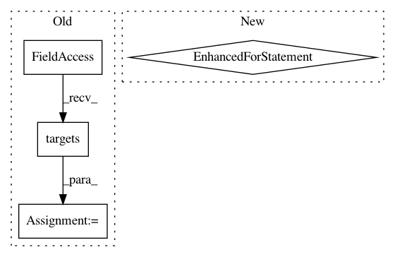

5b7fd99d9997020ec688bb1ad4b3bbbb34c51d76,src/python/pants/backend/jvm/tasks/bundle_create.py,BundleCreate,execute,#BundleCreate#,76
Before Change
self.context.targets())
self.consolidate_classpath(targets_to_consolidate, runtime_classpath)
for target in self.context.targets():
for app in map(self.App, filter(self.App.is_app, [target])):
basedir = self.bundle(app)
// NB(Eric Ayers): Note that this product is not housed/controlled under .pants.d/ Since
// the bundle is re-created every time, this shouldn"t cause a problem, but if we ever
// expect the product to be cached, a user running an "rm" on the dist/ directory could
// cause inconsistencies.
jvm_bundles_product = self.context.products.get("jvm_bundles")
jvm_bundles_product.add(target, os.path.dirname(basedir)).append(os.path.basename(basedir))
if archiver:
archivepath = archiver.create(
basedir,
self._outdir,
app.basename,
prefix=app.basename if self._prefix else None
)
self.context.log.info("created {}".format(os.path.relpath(archivepath, get_buildroot())))
class MissingJarError(TaskError):
Indicates an unexpected problem finding a jar that a bundle depends on.
def bundle(self, app):
After Change
self.context.targets())
self.consolidate_classpath(targets_to_consolidate, runtime_classpath)
for app in apps:
basedir = self.bundle(app)
// NB(Eric Ayers): Note that this product is not housed/controlled under .pants.d/ Since
// the bundle is re-created every time, this shouldn"t cause a problem, but if we ever
// expect the product to be cached, a user running an "rm" on the dist/ directory could
// cause inconsistencies.
jvm_bundles_product = self.context.products.get("jvm_bundles")
jvm_bundles_product.add(app.target, os.path.dirname(basedir)).append(os.path.basename(basedir))
if archiver:
archivepath = archiver.create(
basedir,
self.get_options().pants_distdir,
app.basename,
prefix=app.basename if self.get_options().archive_prefix else None
)
self.context.log.info("created {}".format(os.path.relpath(archivepath, get_buildroot())))
class MissingJarError(TaskError):
Indicates an unexpected problem finding a jar that a bundle depends on.
class BasenameConflictError(TaskError):
In pattern: SUPERPATTERN
Frequency: 3
Non-data size: 4
Instances
Project Name: pantsbuild/pants
Commit Name: 5b7fd99d9997020ec688bb1ad4b3bbbb34c51d76
Time: 2016-01-11
Author: wangpeiyu@gmail.com
File Name: src/python/pants/backend/jvm/tasks/bundle_create.py
Class Name: BundleCreate
Method Name: execute
Project Name: pantsbuild/pants
Commit Name: 1a4dcfcf867af57839ba8f7f497bfbadf6e17927
Time: 2018-01-28
Author: john.sirois@gmail.com
File Name: src/python/pants/backend/python/tasks/gather_sources.py
Class Name: GatherSources
Method Name: execute
Project Name: pantsbuild/pants
Commit Name: 461bb39fbdd9f49ff21a6be038ffbd2e7ae622b0
Time: 2015-07-30
Author: mateorod9@gmail.com
File Name: src/python/pants/backend/android/tasks/dx_compile.py
Class Name: DxCompile
Method Name: execute